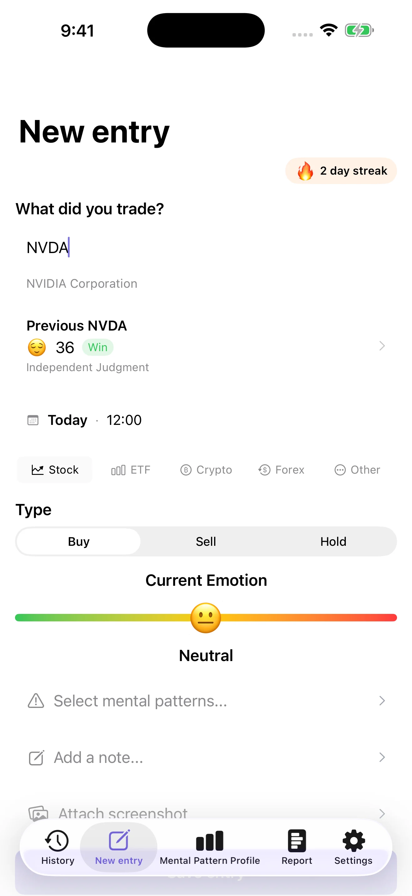
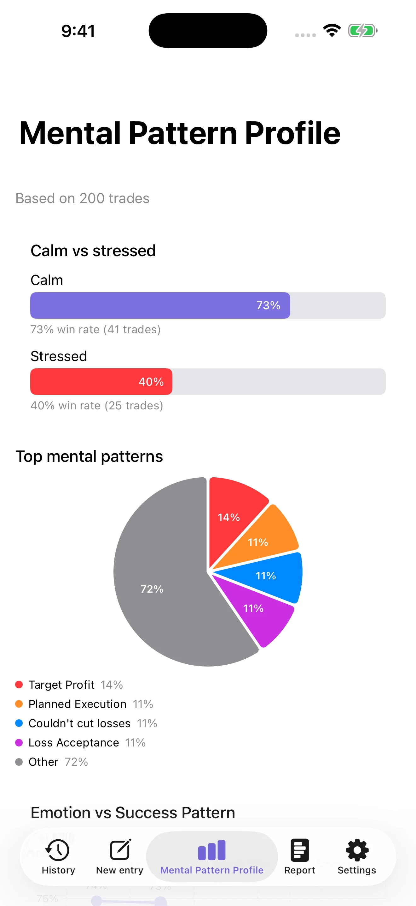
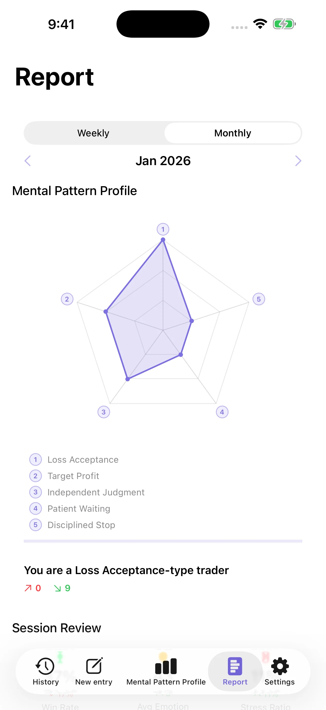
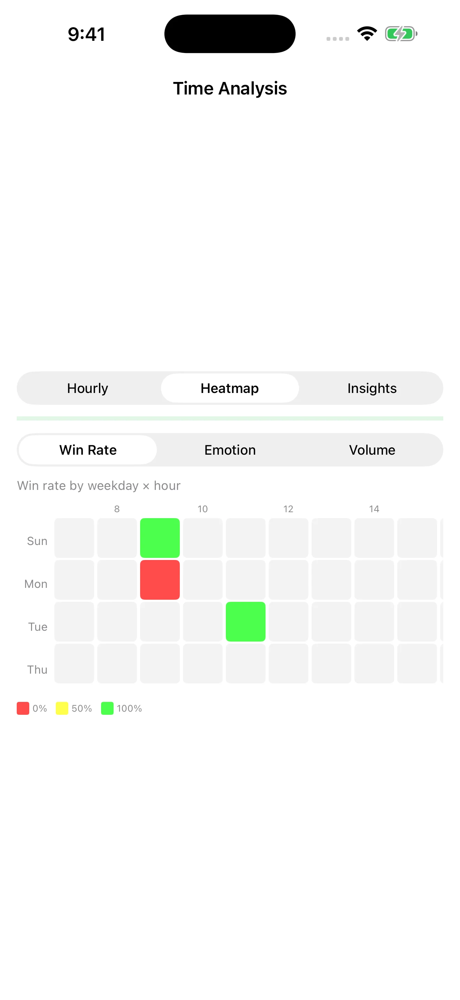

Log the moment
Record the trade, your emotion, and the mental pattern behind it in about 30 seconds.
A private trading psychology journal
Capture the emotion behind each decision, spot the patterns you repeat, and review your own trading data with a calmer perspective.
Download on theApp StoreFor iPhone · Requires iOS 17 or later



Swipe to explore the app screens
From reaction to reflection
MindTrade connects what happened in the market with what was happening inside you.
Record the trade, your emotion, and the mental pattern behind it in about 30 seconds.
Compare calm and stressed outcomes, then see which cognitive biases appear most often.
Review how your results and emotions change across days and hours.
Use weekly and monthly reports to reflect on your process before the next trade.
Patterns have a time
Explore win rate, emotion, and trading activity by weekday and hour. The heatmap turns a long history into one clear signal you can revisit.

Private by design
MindTrade is a journaling and self-awareness tool. It does not provide investment advice, execute trades, or access brokerage accounts.
The next trade starts with awareness
Log the emotional side of your trading with MindTrade.
Download on theApp Store